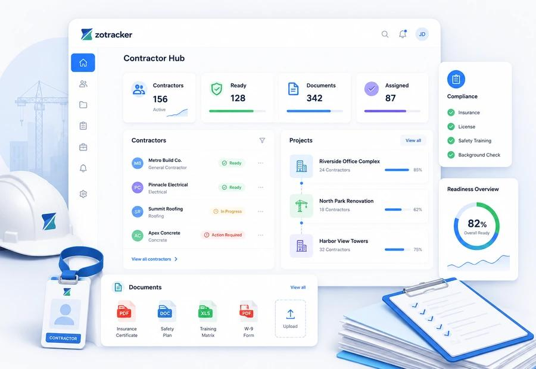

Our Mission
To develop practical, reliable and scalable technology solutions that simplify business operations and solve meaningful real-world problems.
IT, Software & Technology Consultancy
Falcon TIH is an IT, software and technology consultancy focused on developing practical digital solutions that help businesses streamline operations, automate workflows and manage complex processes more effectively.
From custom software development to intelligent business systems, we turn operational challenges into structured, technology-driven solutions.

About Falcon TIH
Falcon TIH (Tech Innovation Hub) is a technology company focused on software engineering, digital transformation and business process automation.
We believe technology should do more than digitize existing processes. It should make work simpler, improve visibility, reduce repetitive tasks and enable better decision-making.
Our approach combines software development, systems thinking and an understanding of real operational challenges to create solutions designed around the people and businesses that use them.
We aim to develop scalable digital products that address specific industry needs while remaining flexible enough to evolve as businesses grow.
To develop practical, reliable and scalable technology solutions that simplify business operations and solve meaningful real-world problems.
To become a trusted technology company known for engineering useful digital systems that improve how businesses operate, collaborate and grow.
What Guides Us
We explore better ways to solve existing problems.
We prioritize solutions that address real operational needs.
We value dependable systems, clear processes and maintainable software.
We build, evaluate and refine our solutions as needs evolve.
Our Expertise
We design and develop web applications and custom software tailored to specific business workflows, operational requirements and organizational goals.
We develop digital workflows that reduce repetitive administrative tasks, improve consistency and help teams manage work more efficiently.
We help identify technology opportunities, evaluate operational challenges and plan appropriate digital solutions aligned with business objectives.
We design connected systems that organize information, improve workflow visibility and support structured decision-making.
Our Flagship Product
Construction Technology · B2B SaaS
Construction projects depend on multiple subcontractors, each with documentation, certification and project-specific requirements that must be managed throughout the project lifecycle.
The Subcontractor Compliance & Risk Management Hub is Falcon TIH's flagship product, designed to help construction companies and property developers centralize subcontractor records, track compliance requirements and identify documentation gaps before they become larger operational concerns.
By bringing subcontractor information and compliance workflows into one digital platform, the system aims to replace fragmented spreadsheets, scattered documents and manual follow-ups with a more organized approach.

Conceptual illustration of the Subcontractor Compliance & Risk Management Hub.
The Challenge
Managing subcontractor compliance manually can create unnecessary administrative work and leave project teams without a clear picture of current compliance status.
Documents may be missing, certifications may approach expiry without timely follow-up, and information may be scattered across emails, spreadsheets and individual project files.
Without a centralized view, identifying outstanding requirements and determining which issues need attention becomes more difficult.
Our Approach
The Subcontractor Compliance & Risk Management Hub is designed to provide a centralized workspace for managing subcontractor onboarding, documentation, expiry dates, compliance reviews and project-level risk indicators.
It aims to help project teams understand what has been submitted, what remains outstanding, which documents require attention and where follow-up is needed.
Platform Capabilities
Create subcontractor records, collect company information and organize onboarding requirements.
Store and categorize compliance documents so project teams can retrieve relevant information more easily.
Track document validity periods and notify responsible users about approaching or overdue expirations.
Identify missing documents, pending reviews and outstanding requirements through structured status indicators.
Explore automated extraction of relevant information from submitted documents, with human review for accuracy.
Associate subcontractors with projects and review their compliance status against applicable requirements.
Highlight defined compliance gaps and generate summaries that help teams prioritize follow-up.
Maintain a record of document submissions, reviews and status changes to support accountability and traceability.
Who We Serve
The Process
Create subcontractor records and define the required documentation.
Gather and organize documents for each subcontractor and project.
Assess submissions against configured requirements and record review decisions.
Track document validity, missing information and outstanding actions.
Use alerts, dashboards and reports to prioritize follow-ups and maintain visibility.
Compliance management should be organized, proactive and transparent. Our goal is to help construction teams spend less time chasing information and more time acting on it.
The platform is under development. Features will be introduced and validated as the product evolves.
How We Work
Identify the operational challenge and the people affected by it.
Translate requirements into clear workflows and practical system designs.
Develop maintainable software around the most important user needs.
Evaluate performance, gather feedback and refine the solution over time.
Building for the Future
Falcon TIH is establishing its presence through construction technology while maintaining a broader focus on software engineering, consultancy and digital systems.
Our flagship product represents the beginning of that journey. As the company grows, we intend to explore additional products that solve clearly defined problems across different industries.
We believe lasting innovation begins with understanding a problem and building a solution that makes a measurable difference.
Start a Conversation
Have an operational challenge, a software idea or a process that could work better?
Falcon TIH welcomes conversations about technology, software development and digital transformation.
Discuss a Project